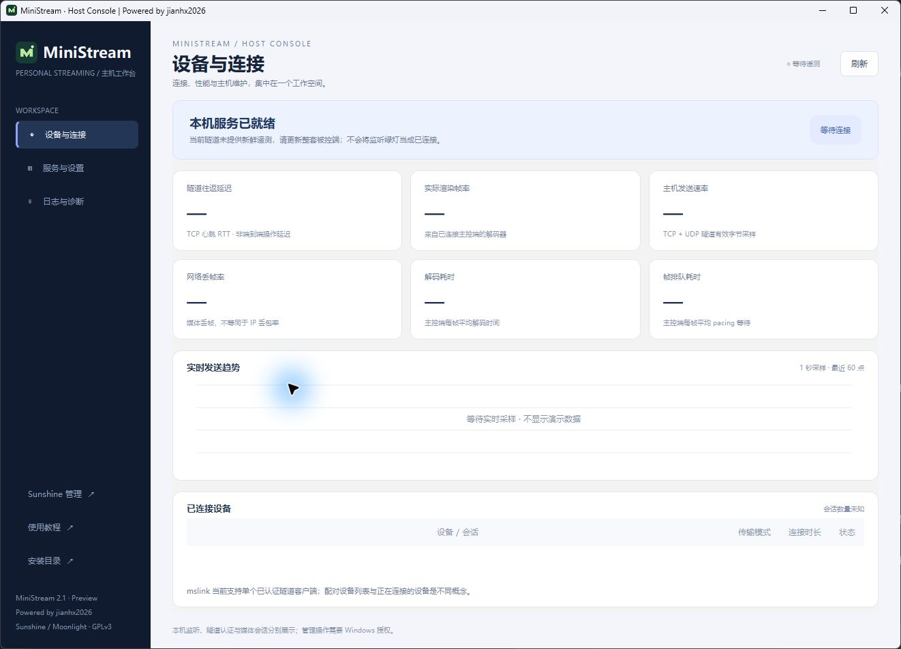
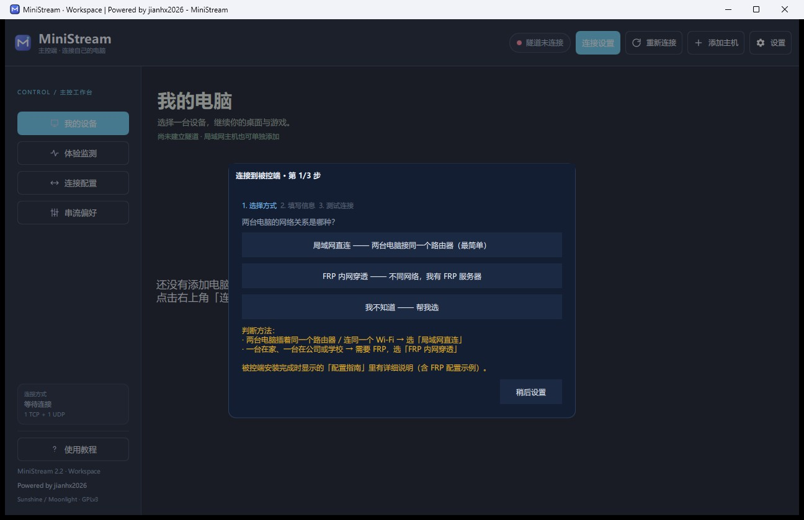

01 / 先确认两台电脑的角色
被控端是实际运行游戏和桌面的主机；主控端是你用来查看画面、操作鼠标键盘的电脑。请只连接自己拥有或获得授权的设备。
Windows 使用与程序架构匹配的微软 Visual C++ v14 运行库。新编译程序在旧版运行库上可能崩溃。仅从微软官方页面获取安装程序，不要下载散装 DLL 替换系统文件。
微软运行库说明 ↗适用于 MiniStream 2.1.2 正式版。先完成隧道认证，再确认 UDP 探测和实际媒体。旧版本请两端配套升级，并保留现有安装目录和个人配置。
被控端是实际运行游戏和桌面的主机；主控端是你用来查看画面、操作鼠标键盘的电脑。请只连接自己拥有或获得授权的设备。
Windows 使用与程序架构匹配的微软 Visual C++ v14 运行库。新编译程序在旧版运行库上可能崩溃。仅从微软官方页面获取安装程序，不要下载散装 DLL 替换系统文件。
微软运行库说明 ↗完成被控端安装后，保存自己的隧道口令和 Sunshine 管理信息。新版桌面入口为「MiniStream 被控端」，控制台可查看端口、管理服务、设置端口和导出诊断。

「本机已监听」仅说明本机端口存在监听，不等于 FRP、公网或 UDP 通路已验证。首次使用还需在主控端测试连接与配对。需要输入 PIN 时，从被控端打开 Sunshine 管理页面完成授权。
重启和停止会中断远程使用，操作前应确认没有正在使用的会话。管理命令会请求 Windows 管理员授权，取消授权不会更改配置。
选择局域网或 FRP，填写自己的地址、端口和隧道口令。Sunshine 管理密码用于自动配对，可留空并采用手动 PIN 流程。不要把文档示例地址当成可用公共服务器。

测试连接后检查主机卡片是否在线和已配对，再进入应用列表。隧道认证成功不代表游戏串流已经正常。进入桌面后分别检查画面、声音和鼠标键盘。
串流时用 F12 或 Ctrl+Alt+Shift+X 打开菜单，切换鼠标模式、统计、显示方式或断开连接。游戏更常使用相对坐标；普通桌面按实际体验选择。
同一网络先使用主机局域网 IPv4 验证。跨网络再配置自己的 FRP 或可信网络，mslink 默认对外提供 TCP 14738 与 UDP 14739，实际端口以安装配置为准。
FRP 需要分别配置 TCP 与 UDP 代理。代理名写着 UDP 不代表所有底层传输都没有 TCP；请核对服务端、客户端和服务商的实际设置。不要公开转发 Sunshine 管理页面作为日常串流入口。
控制台修改端口后，还需同步修改客户端、映射与防火墙。控制台不会替你自动开放公网访问。
新版「设备与连接」会显示真实认证客户端、RTT 和发送趋势。开始串流后，新版主控端回传帧率、网络丢帧与解码/排队时间；没有数据或过期时显示“—”。旧版两端需配套升级。网络丢帧不是 IP 丢包率，隧道 RTT 不是端到端操作延迟。可在被控端「日志与诊断」中导出脱敏报告。分享前再次检查内容，日志与转储可能含设备和进程信息，请勿直接公开上传凭据、私人地址或崩溃转储。
主控端运行日志通常在 %TEMP%/Moonlight-*.log，隧道日志的回退位置是 %TEMP%/MiniStream/mslink.log。请提供与复现时间对应的新日志，避免误发包内旧日志。
先结束当前串流，保存自己的安装信息。在已有被控端目录覆盖升级，避免旧版 x86 路径与新版默认路径并存。安装器保留已有隧道配置和 Sunshine 账号。只打开新面板不会替换正在运行的旧 mslink。
升级后核对面板里的认证设备、更新时间与实际传输模式。2.1.2 修复了多网卡收包地址与回包地址不一致的问题；持续 TCP 回退时应检查有效 ACK 和返回源端点，而非只测 UDP 发包。
2.1.2 已验证协议自检、源地址保持、100 包突发和本次真实转发的 UDP 恢复。截图为实际应用窗口的未连接状态。尚未完成所有 Win10/Win11 干净系统安装、GPU/驱动组合与长时间跨网游戏验收；正式发行不代表所有卡顿或输入问题均已解决。